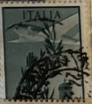
| SOURCE | TITLE| IMAGE MATCH | click to source page |
| AbeBooks | Anuarí - AbeBooks | 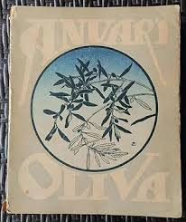 |
| eBay | Vintage Artist Signed Oil Painting Koala Bear On Tree Framed 9.5x7.5" | eBay | 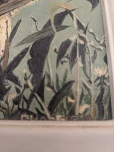 |
| eBay | PJ REDOUTE 17.5 X 22 FRAMED EILLET VARIETE LANGLOIS FLOWER PICTURE 1989 | eBay | 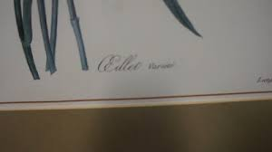 |
| PicClick | VOGUE MAGAZINE APRIL 15, 1947 Decorating Issue Cover by Irving Penn $199.95 - PicClick | 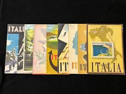 |
| Vintage Poster - Rapallo, Italy - Puppo, 47., Historic Wall Art - 24in x 36in | 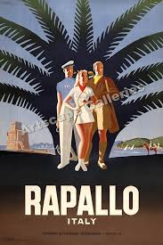 | |
| Sold at Auction: Mario Puppo, Mario Puppo (1905-1977) | Туристические плакаты, Старые плакаты, Картины | 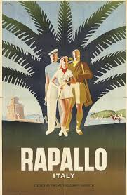 | |
| Cute And Fluffy - | 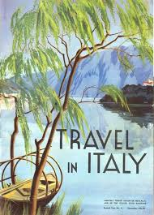 | |
| Golden Age Posters | 1957 To the Mediterranean and all Europe by the Italian Line Poster – Golden Age Posters | 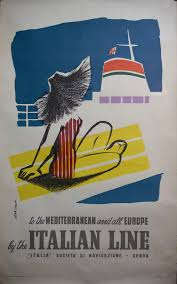 |
| Walkabout Books | E-LIST 15: The Golden Age of Travel (Brochures) PART I: THE UNITED STATES | 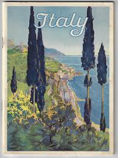 |
| Artsupp | Italy, work by, Ruggero Alfredo Michahelles, detto RAM | Artsupp | 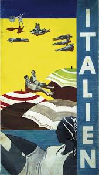 |
| pixels.com | Rapallo Italy Vintage Travel Poster 1947 Acrylic Print by Vintage Treasure - Vintage Treasure Official Website | 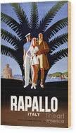 |
| Airline Timetable Images | Navigazione Generale Italiana - NGI | 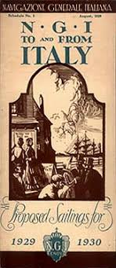 |
| Fine Art America | Italy, lemons, vintage travel poster Wood Print by Long Shot - Fine Art America | 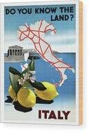 |
| Etsy | Am Cassandre - Etsy UK | 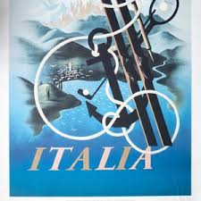 |
| AbeBooks | Italy [ Edizione Americana ] by ENIT: Ente Nazionale Industrie Turistiche [ Italian State Tourist Department ]: Very Good Soft cover | Works on Paper | 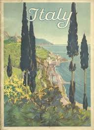 |
| Large Framed Limited Edition NZ Print | Used - Good | NZ$69.00 | Wanganui, Manawatu-Wanganui | ||
| Vintage Paper Ads | 1933 Italian Tourist Ad - Mountain Stations, Riviera-BG0183 | 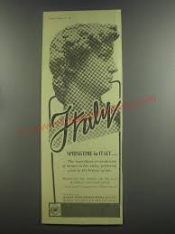 |
| Artnet | Giovanni Patrone | Artnet | 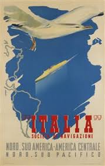 |
| eBay | 1928 FEBRUARY ITALIA MAGAZINES ANNO VI NUMERO 4 - ST 5157 | eBay | 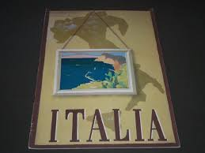 |
| bibliopolis.com | Tschanz Rare Books | 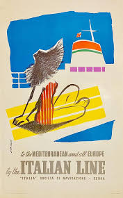 |
| Galerie 1 2 3 | Vintage poster – Monte-Bianco funivie, La Pallud - Courmayeur - Valle d'Aosta – Galerie 1 2 3 | 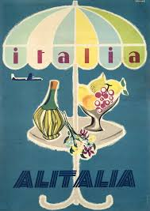 |
| eBay | Aviation Used Italian Stamps for sale | eBay | 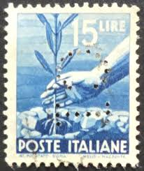 |
| Can anyone identify this artist? : r/WhatIsThisPainting | 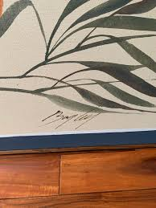 | |
| Etsy | Italia Lithograph by A.M Cassandre, 1998 - Etsy UK | 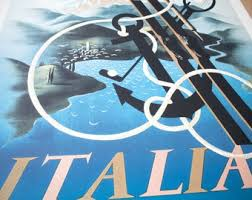 |
| Bodnar's Auction | Lot 11 - Grouping of Posters/Lithographs - Bodnar's Auction | bodnarsauction.com | 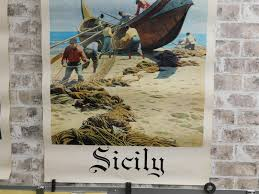 |
| eBay | 1930s Vittorio Grassi Italian Italy Travel Brochure Art Deco Color Graphics | eBay | 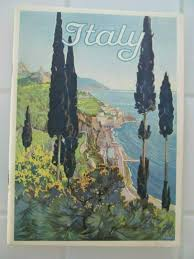 |
| Messy Nessy Chic | My Secret Paris Archive | 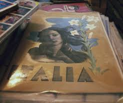 |
| Pin by Andrea on cuadros in 2025 | Canvas art painting abstract, Mural art design, Plaster wall art | 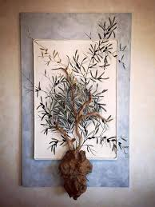 | |
| Mullen Books | Italy 1900-1945 : the Mitchell Wolfson Jr. collection of decorative and propaganda arts | Miani-Dade Community College | 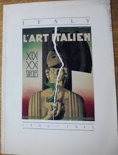 |
| firetruck.center | nacnic Lámina Vintage de Francia e Italia Oferta especial | Hogar y jardín | firetruck.center | 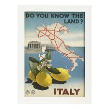 |
| eBay | 1945 Italian Stamp 15L Democracy Used ...(FBX) | eBay | 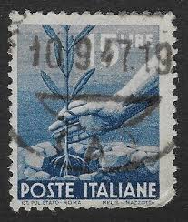 |
| eBay | decorative wall dorm rooms Italy travel poster 8x10" print | eBay | 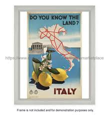 |
| Invaluable.com | Sold at Auction: Travel Poster NGI Genova Italy New York Mazzini | 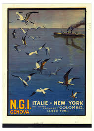 |
| Craigslist | Wild Rose AK Artist Anna Huong - collectibles - by owner - sale - craigslist | 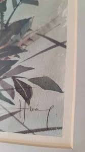 |
| Monaco Exposition by Leonetto Cappiello 1920. Shop link in bio or copy and paste link below: https://pixels.com/featured/monaco-exposition-poster-1920-joe-vella.html #prints #printsforsale #printsagram #artforsale #collecting #printspiration #poster ... | 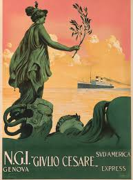 | |
| gcfphotography.com | Genoa Italy Yoga Mat by Georgia Clare - Georgia Clare | 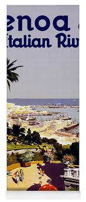 |
| eBay | Vintage PUPPO Mario Travel Poster Retro Look Sign T2138 | eBay | 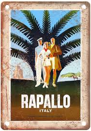 |
| allnumis.com | 15 Lire - Hand Planting an Olive Tree, 1940-1949 generic - Italy - Stamp - 51385 | 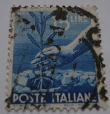 |
| Amazon.sa | Nacnic Vintage France and Italy Vintage Poster - Do You Know Italy? - A4 : Buy Online at Best Price in KSA - Souq is now Amazon.sa: Home | 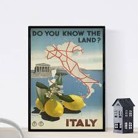 |
| Pictorem | Do you know the land Italian tourism poster by VINTAGE POSTER Wall Art | 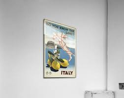 |
| Michelle Nixon | Series of botanicals Each 5x7 Watercolor I forgot to post these; these are some small botanicals I did for the small works show at red... | Instagram | 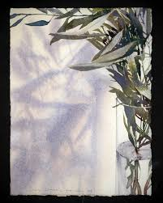 | |
| Joe dimaggio signature on menu : r/Autographs | 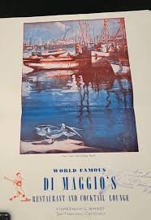 | |
| eBay | David Lance Goines signed And Numbered PALLIDO 64/300 Dated 1987! | eBay | 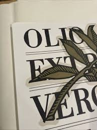 |
| Fine Art America | Saturnalia Wall Art for Sale - Fine Art America | 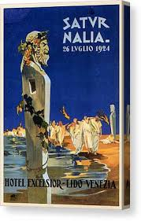 |
| pixelsmerch.com | Vintage Travel Poster - Italy Painting by Esoterica Art Agency - Pixels Merch | 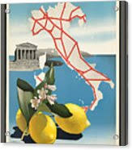 |
| eBay | 1945 Italian Stamp 1L Democracy Used ...(FBX) | eBay | 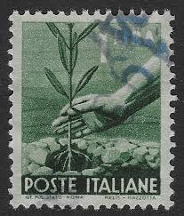 |
| Zazzle | Cesare Borgia Poster | Zazzle | 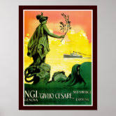 |
| Amazon.com | Amazon.com: Wee Blue Coo Travel Italy Map Temple Lemon Sea Roman Ruin Flower Art Print Framed Poster Wall Decor 12x16 inch: Posters & Prints | 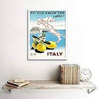 |
| Etsy | Italy 1961 - Etsy UK | 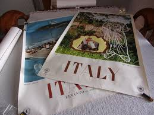 |
| eBay | Decor Poster.Home interior design.Room wall art.Italian Line Cruise ship.6905 | eBay | 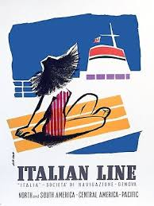 |
| Fine Art America | L'art Italien - Marble Sculpture - Retro travel Poster - Vintage Poster Yoga Mat by Studio Grafiikka - Fine Art America | |
| myitalytravelplanner.com | HOME | Italy Travel Planner | |
| Etsy | Vintage Wallpaper by the Metre - 30s Wallpaper - Vintage Wallpaper From 30s - Etsy Ireland | |
| Etsy | Italy Vintage Travel Poster, Vintage Wall Art, Art Decor, Trendy Prints for Timeless Elegance Beauty Museum Quality Print - Etsy Australia | |
| www.sommcast.com.br | Italy Travel Italian State Tourist Office 1951 Magazine Ad D17 | |
| Christie's | LALIA, ALFREDO (B.1907) , SUMMER IN ITALY | Christie's | |
| Etsy | Vintage Italy Travel Poster Art Print - Etsy | |
| Hoover Institution | Elephants | Hoover Institution Elephants | |
| Fine Art America | Italy Vintage Travel Poster 1935 Poster by Vintage Treasure - Fine Art America | |
| eBay | 501745 ITALY KNOW LAND? - Vintage **** 16x12 WALL PRINT POSTER | eBay |